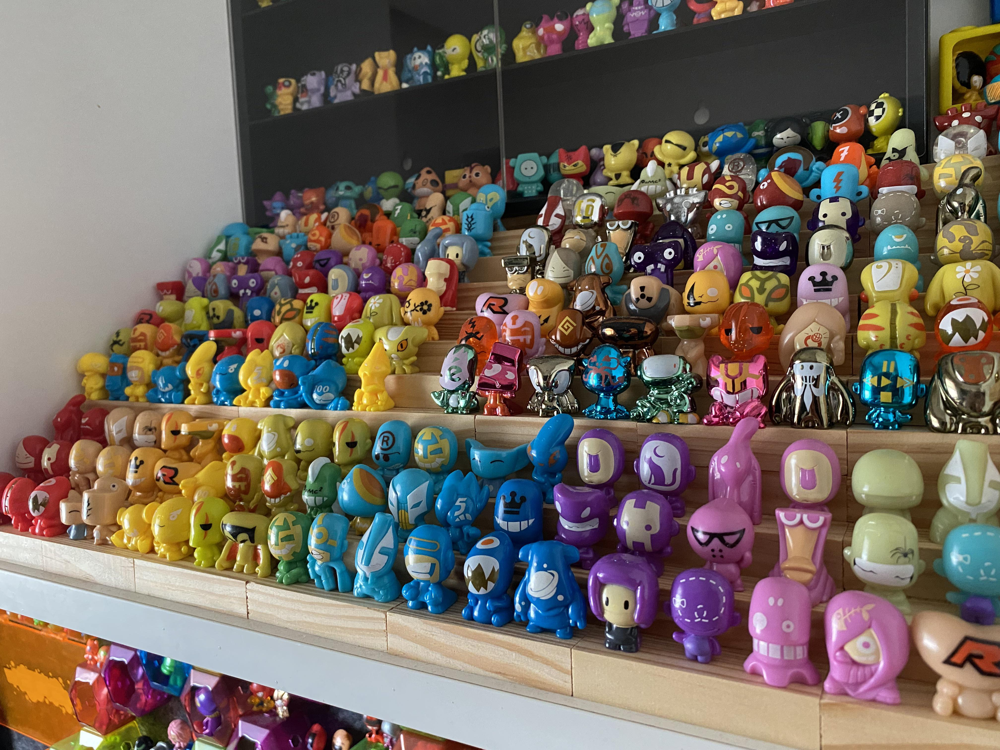

Caso curioso #2: Figuras coleccionables, un arte en miniatura
Publicado por el equipo de Geek&Manga
Cada figura coleccionable que llega a tus manos pasó por un proceso creativo mucho más largo y detallado de lo que parece. Todo comienza con el diseño: artistas especializados estudian minuciosamente al personaje original —su rostro, su pose característica, la caída de la ropa— para capturar su esencia en una sola postura estática que transmita movimiento y personalidad.
Con el diseño aprobado, se pasa al modelado 3D digital, donde se define cada detalle: pliegues de tela, expresiones faciales, texturas de cabello y accesorios. Este modelo digital luego se imprime en resina para crear un prototipo físico, llamado "master", que se revisa y corrige varias veces antes de aprobar la producción final.
Una vez aprobado el prototipo, se fabrican los moldes que permiten producir las figuras en masa, generalmente en PVC o ABS. Cada pieza pasa luego por un proceso de pintado —a mano o con plantillas de alta precisión— y un exhaustivo control de calidad antes de llegar a su empaque final.
Por eso una figura coleccionable no es solo un adorno: es el resultado de meses de trabajo artístico y técnico. En Geek&Manga seleccionamos cuidadosamente cada pieza de nuestro catálogo para asegurarnos de que ese esfuerzo se refleje en la calidad que llega a tu colección.
← Volver a Blogs